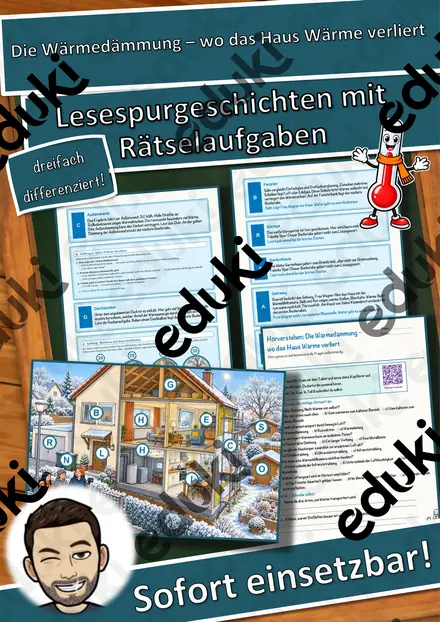
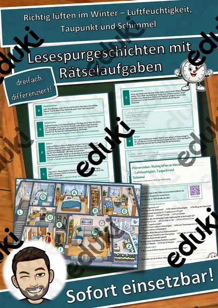
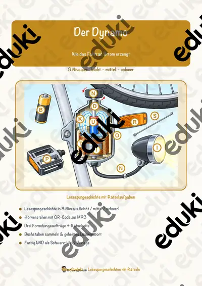
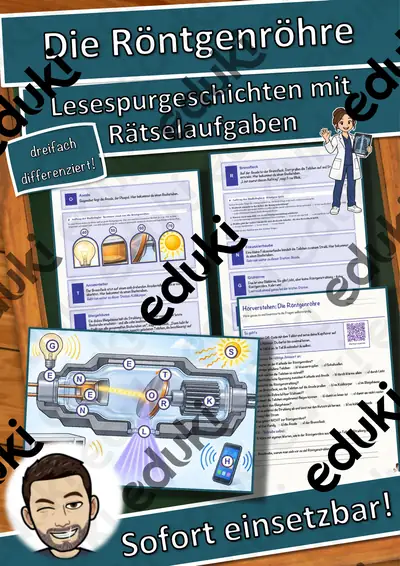
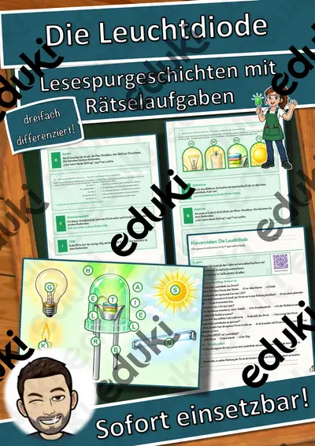
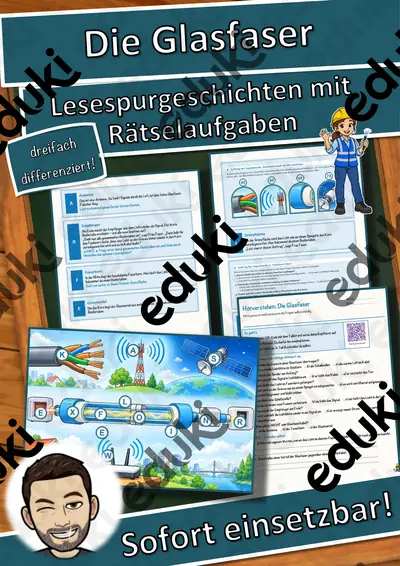
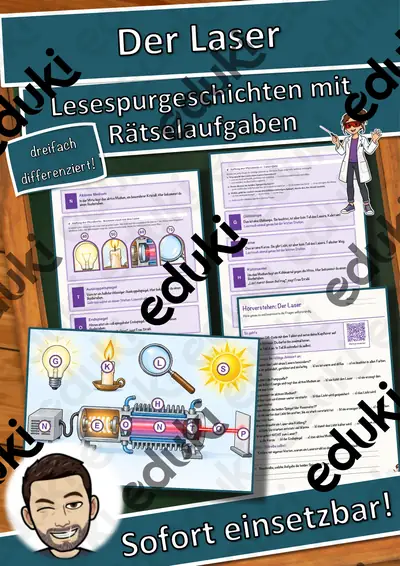
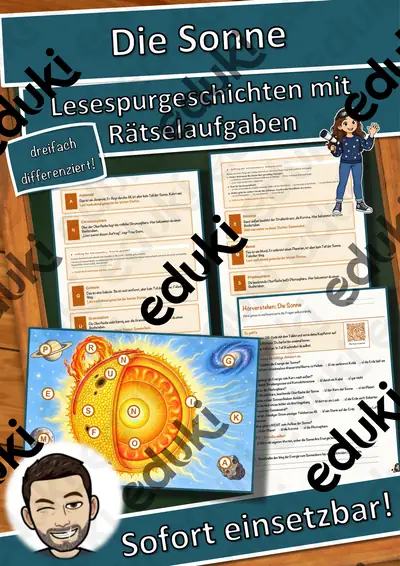

Der Transformator – Lesespurgeschichte mit Rätselaufgaben (Klasse 9)
Mit dieser differenzierten Lesespurgeschichte erarbeiten die Lernenden selbstständig und motivierend, wie ein Transformator aufgebaut ist und wie er eine Wechselspannung hoch- oder heruntersetzt – vom Oberspannungsanschluss über Primärspule, Eisenkern und Sekundärspule bis zum Unterspannungsanschluss, der Durchführung, den Kühlrippen, dem Ölkessel und dem Ausdehnungsgefäß. Die Ingenieurin Frau Bergmann führt durch die Trafostation.
So funktioniert die Lesespur: Die Lernenden lesen einen Abschnitt, entnehmen dem Hinweis einen Teil des Transformators, suchen ihn auf dem farbigen Transformator-Plan (einer anschaulichen Schnittzeichnung) und lesen dort weiter. An jeder richtigen Station sammeln sie einen Buchstaben. Vier Sackgassen (Strommast, Vogel, Warnschild, Zaun) dienen der Selbstkontrolle und machen deutlich, dass diese Dinge zwar zur Trafostation gehören, aber nicht zum Transformator selbst. Am Ende ergeben die gesammelten Buchstaben ein geheimes Lösungswort rund um das Thema.
Inhaltlich verbindet das Material zentrale Themen der Physik: den Aufbau des Transformators, die Spannungserzeugung durch ein sich ständig änderndes Magnetfeld, das Windungsverhältnis beider Spulen und das Hoch- bzw. Heruntersetzen der Spannung, warum ein Transformator nur mit Wechselstrom arbeitet sowie die Kühlung durch Öl und Kühlrippen. Ein anschauliches, lehrplannahes Thema aus der Elektrizitätslehre.
Das ist enthalten:
- Lesespurgeschichte in drei Niveaus (leicht, mittel, schwer) – ideal zur Differenzierung
- farbiger Transformator-Plan mit allen Stationen
- vier eingebettete Aufträge: Begriffe verbinden, Quiz, Rechenaufgabe, Steckbrief
- Hörverstehen mit QR-Code zum Hörtext (Teil A Ankreuzen, Teil B frei schreiben)
- Rätselseite (Wörter-Suchsel und Wissensquiz)
- Ausmalbild
- ausführliches Lösungsblatt mit Fundorten
- das komplette Material zusätzlich als drucksparende Schwarz-Weiß-Vorlage
Geförderte Kompetenzen: sinnentnehmendes und selektives Lesen, Anwenden von Lesestrategien, konzentriertes Zuhören sowie das physikalische Verständnis von Aufbau und Wirkungsweise des Transformators.
Einsatz: Übungsphasen, Wochenplan, Stationenlernen, Vertretungsstunden, Freiarbeit und Nachhilfe. Umfang: 26 Seiten.
Ähnliche Materialien

Die Wärmedämmung – wo das Haus Wärme verliert – Lesespurgeschichte mit Rätselaufgaben (Klasse 9)

Richtig lüften im Winter – Luftfeuchtigkeit, Taupunkt und Schimmel – Lesespurgeschichte mit Rätselaufgaben (Klasse 9)

Der Dynamo – Lesespurgeschichte mit Rätselaufgaben (Klasse 9)

Die Röntgenröhre – Lesespurgeschichte mit Rätselaufgaben (Klasse 9)

Die Leuchtdiode – Lesespurgeschichte mit Rätselaufgaben (Klasse 9)

Die Glasfaser – Lesespurgeschichte mit Rätselaufgaben (Klasse 9)

Der Laser – Lesespurgeschichte mit Rätselaufgaben (Klasse 9)
